| 日付 | 2012年7月16日（月） |
|---|---|
| 山域 | 南アルプス |
| メンバー | 家族（妻、長女・1歳） |
| 山行形態 | 子連れ日帰り |
| アクセス | 車 |
| ルート (Map) | 臨時駐車場 (8:34) - (9:00) 櫛形山登山口 - (9:49) 櫛形山 - (10:40) 裸山 (11:12) - (11:40) アヤメ平 - (12:44) 櫛形山 - (13:27) 櫛形山登山口 - (13:47) 臨時駐車場 |
海の日連休がやってきて夏山シーズンが始まったが、梅雨明けはまだ。
3連休の最終日だけ少し天気が落ち着きそうなので、その日だけ出かけることにする。
もうかなり暑いので標高の高い山に行きたいが、
曇予報では好展望の山に行く気にはなれない。
そこで森が美しいことで知られている櫛形山に行ってみることにする。
南アルプス前衛の山で、遠くから見ると和櫛の形をしている。
登山口も山頂もそこそこ標高が高いので、涼しくて快適な登山ができそうだ。
アプローチに使う林道池の茶屋線は工事中。
迂回路があるがそれも途中までで、登山口から1.5㎞手前の臨時駐車場に駐車する。標高1730m。
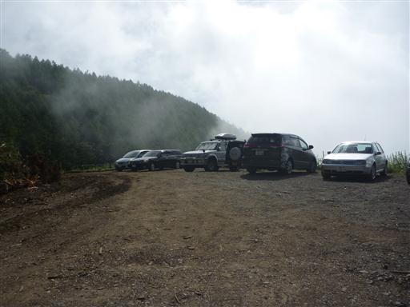
臨時駐車場がいっぱいになったため、別の車は林道の先に通されていた。
工事中ではあるものの車の通行は可能なようだ。
ここに停めずに車で先に進めばよかったと後悔しながら歩き始める。
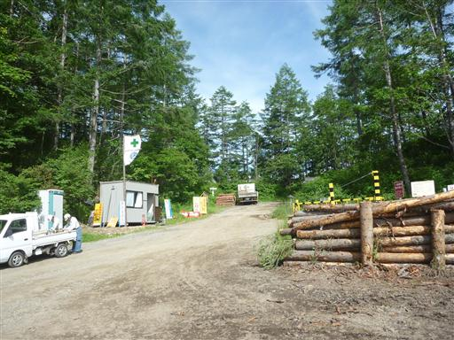
林道から見えているのは南アルプス白峰南嶺だ。
黒河内岳や白河内岳などの行きたかった山々が見えている。
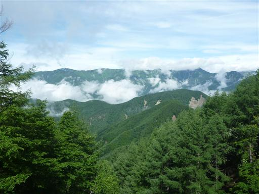
背後に遠く見えているのは悪沢岳。なかなか展望の良い林道だ。
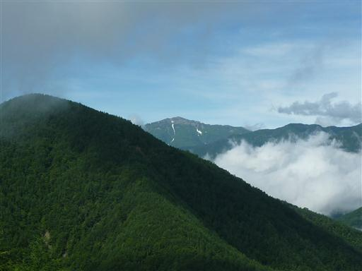
林道の終点に到着する。ここには立派な駐車場があり数台の車が停まっている。
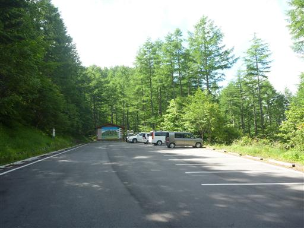
駐車場の奥から登山道が始まっている。
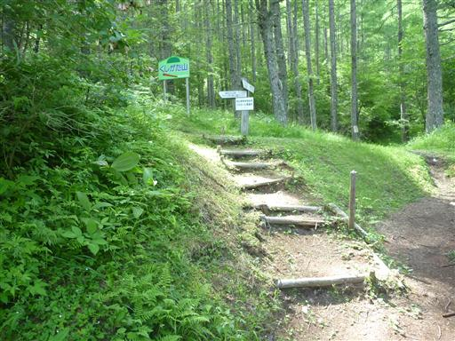
大きく切り開かれた急斜面をジグザグに登っていく。
山頂までの標高差はあまりないので一瞬の登りだ。

途中で展望が大きく開け、白峰三山が眼前に広がる。
3000mを超える三山だが、ここから見ると割と平凡な山容だ。
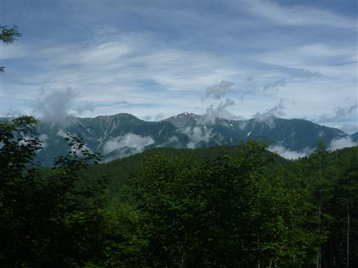
櫛形山の山頂に到着。三角点があるが、それ以外に山頂標識が見当たらない。
先に進むことにする。
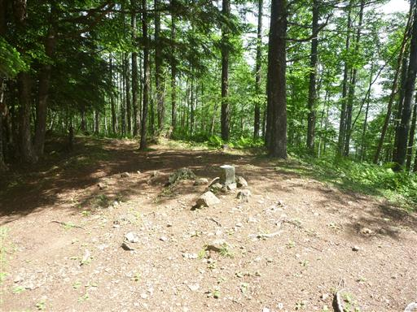
一旦下った後、再び登り始める。この辺りも巨木が林立していて見事だ。
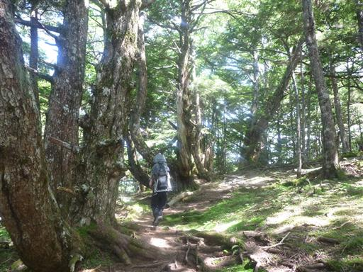
登った先に櫛形山の山頂標識がある。標高2052m。
地形図を見ると確かにこちらの方が若干標高が高そうに見える。
ここが櫛形山の最高地点のようだ。
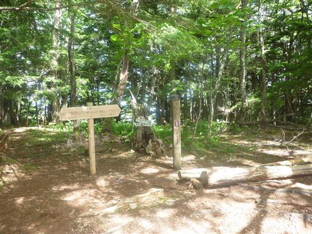
櫛形山は長い頂稜部をもっている。そのため、ここからはアップダウンの少ない尾根道が続く。
辺りはマルバダケブキが繁茂している。
さほど美しい花ではないが、これだけ群生していると開花時は見事だろう。
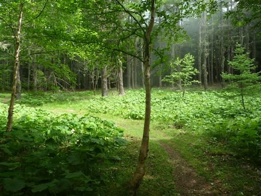
枝から垂れ下がっているのはサルオガセだ。
木に着生しているが、寄生植物ではないらしい。
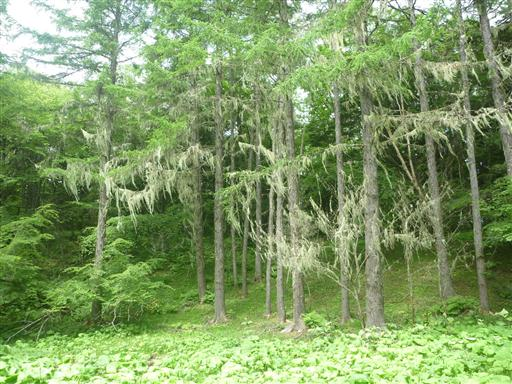
地面から不思議な植物が顔を出している。
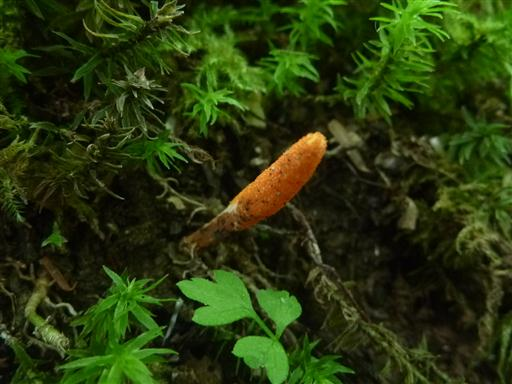
こちらも見事なサルオガセ。
櫛形山はサルオガセの名所として知られている。
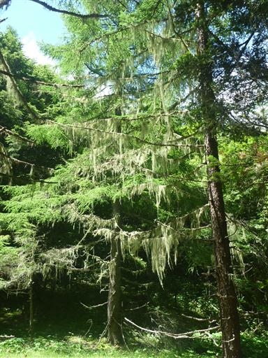
櫛形山の原生林は山梨の森林100選に指定されている。
最近この100選の標識をよく見かける。

カラマツの巨木。標識にはなぜか「櫛形山のカラマツ林」と記載されている。
推定樹齢は300年とのこと。
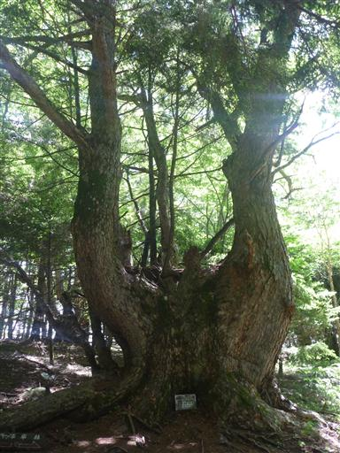
鬱蒼とした樹林帯を抜けると、明るく開けた場所に出てくる。
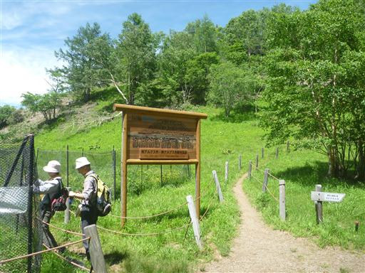
シカの食害から植物を守るために、あちらこちらにフェンスが張られている。
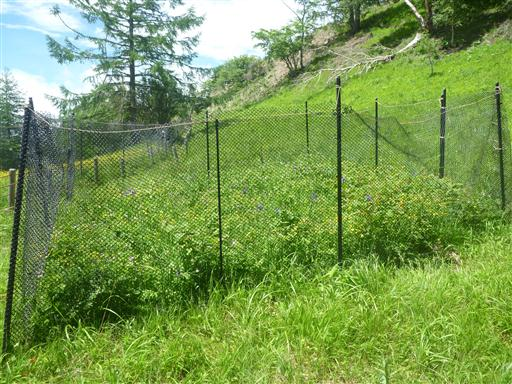
ここには見事なお花畑が広がっている。ところどころアヤメが咲いている。
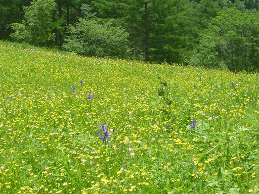
こちらはグンナイフウロ。
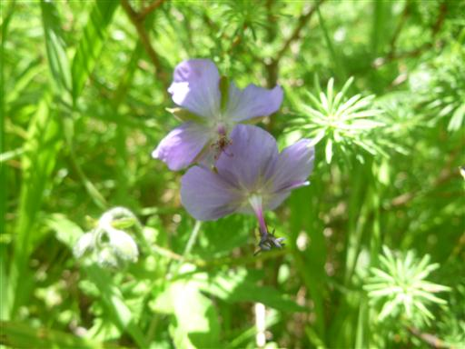
写真を撮りやすいように、フェンスには所々に穴が開いている。
フェンスの中のお花畑は確かにすばらしいが、フェンスの外にはほとんど花が咲いていない。
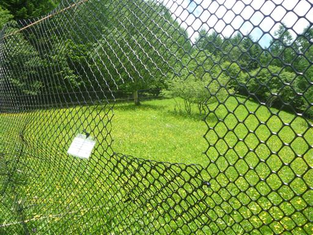
お花畑からわずかの登りで裸山の山頂に到着する。標高2003m。
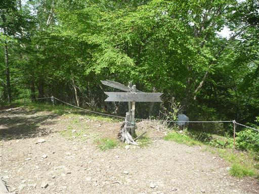
裸山からは櫛形山が目の前に見える。
南アルプスの悪沢・赤石・聖も見えるらしいが、残念ながら雲の中だ。
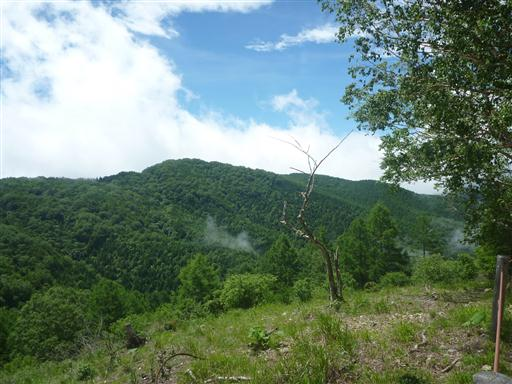
裸山からアヤメ平に向かう。
ここの木は枝が少ないので目立たないが、ここにもサルオガセが繁茂している。
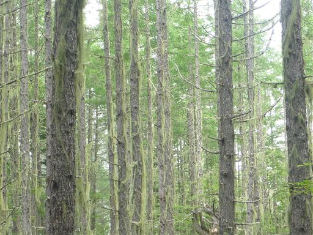
巨木がポツリポツリと立っている。非常に巨木の多い森だ。
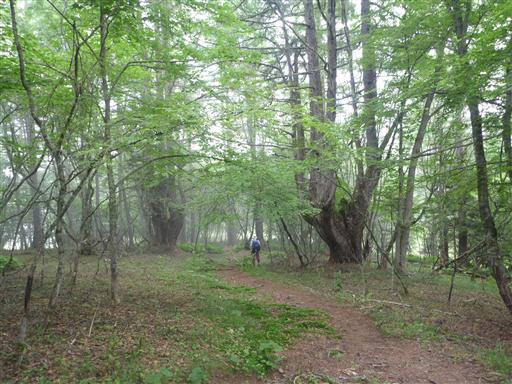
アヤメ平に到着。
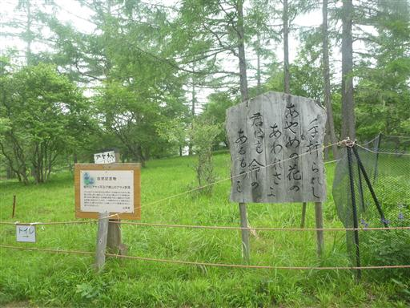
かつてここにはアヤメの大群落があったらしいが、
今は狭いフェンスの中にわずかに咲いているのみだ。
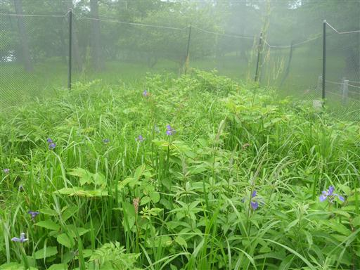
毎年ここに来ているという人の話では、10年ほど前は見渡す限りアヤメの大群落だったらしい。
それが年々数が減っていって、今では完全になくなってしまったとか。
シカの食害の他に、乾燥化などが原因と言われている。
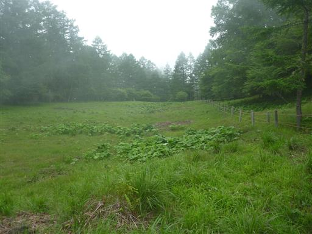
帰りは裸山をスキップして直接櫛形山に向かう道を歩く。
山頂部はほとんど平坦なのだが、体調が悪いためかわずかなアップダウンが辛い。
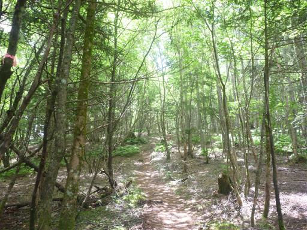
櫛形山に戻ってくる。少し腰をおろして休憩。
山頂で絵を描いている人がいる。
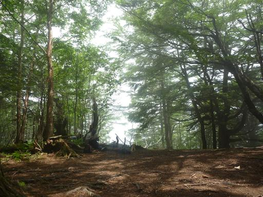
下山時には辺りは完全に雲に覆われてしまう。
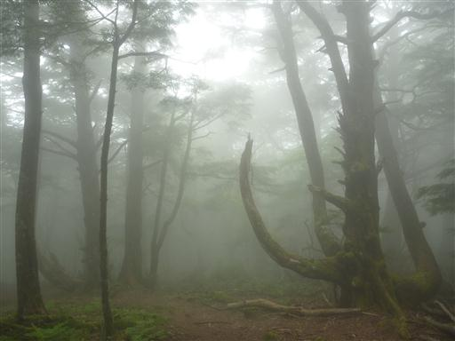
息をしても大丈夫かと思うほどの濃い霧だ。すぐ目の前も霞んでよく見えない。
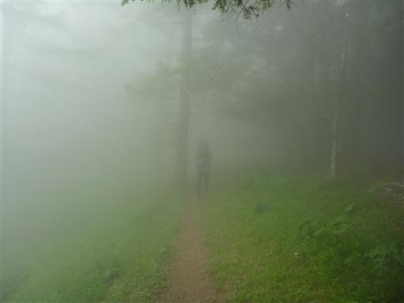
森の中も真っ白だ。
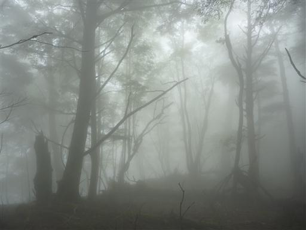
霧の中、針葉樹の新芽が明るく光っている。
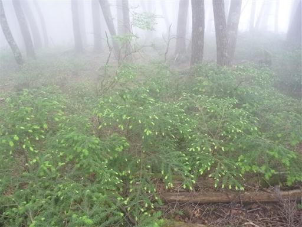
霧を抜けると一気に視界が広がる。霧に覆われた櫛形山方面を振り返る。
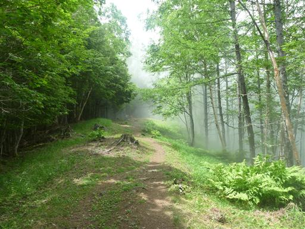
あとは展望の良い道を下って行くのみ。遠くには南アルプスの山が見えている。
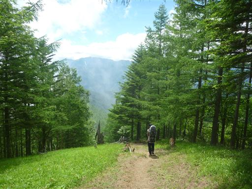
駐車場に下山。停まっている車の数は増えている。
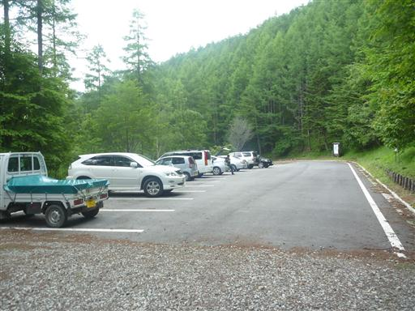
林道は重機が占拠している。車で奥まで行った場合は、いくらか待たされることになりそうだ。
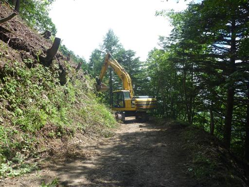
臨時駐車場に到着。辺りは再び雲に覆われてしまった。
アヤメはなくなってしまったけれど、巨木とサルオガセが織成す美しい森をもった山だった。
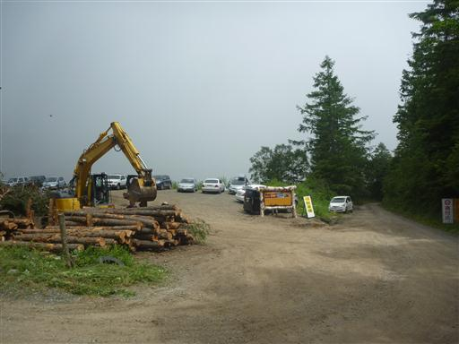